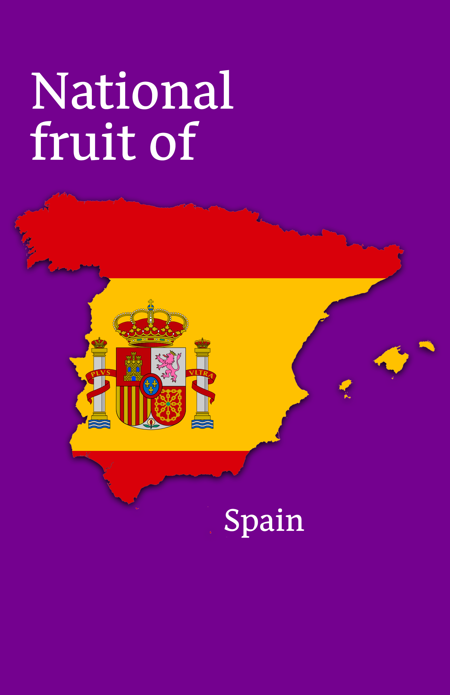
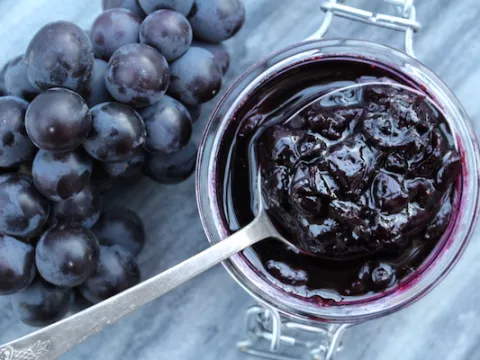
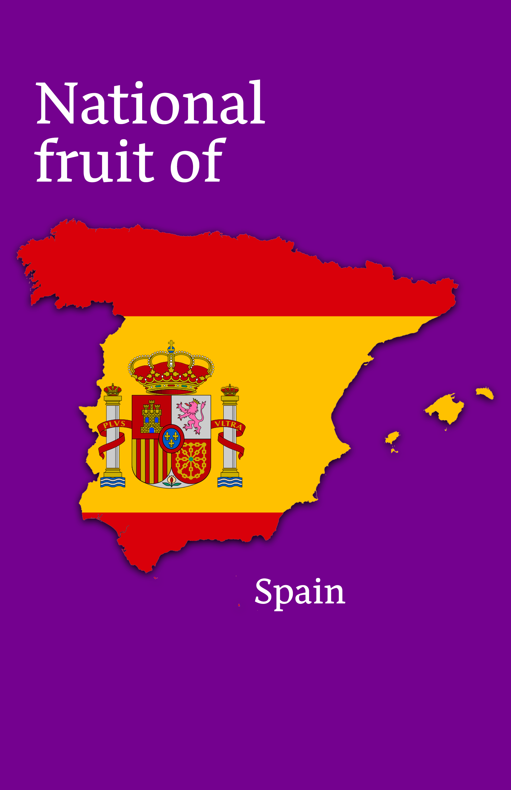
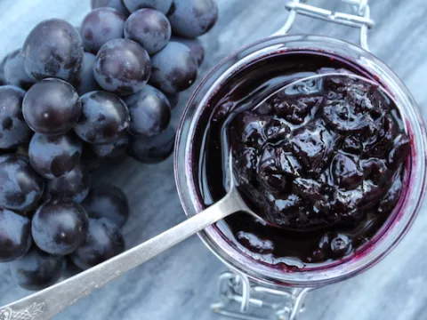

The
Grape
Grapes are a type of fruit that grow in clusters on vines and come in a
variety of colours, including green, red, purple, and black. They have
a
sweet, juicy flesh and a small seed in the center. Grapes are a popular
fruit that can be eaten fresh or used in a variety of dishes, such as
salads,
jams, and wine. They are high in antioxidants, fiber, and vitamin
C, and
are also a good source of other essential nutrients. Grapes are
cultivated
in many regions around the world, and there are many different
varieties
with varying flavours and textures. Some popular types of grapes
include
Thompson seedless, Concord, and Cabernet Sauvignon.
Grape Jam
Recipe
(click image)
 


